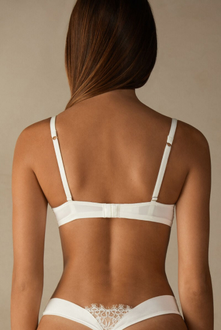

Eternal Love Sofia Balconette Bra
$47.36
White
Size
- 32B
- 34B
- 34C
- 36B
- 36C
- 38B
Это тело аккордеона первого элемента. По умолчанию оно скрыто, пока плагин сворачивания не добавит соответствующие классы, которые мы используем для стилизации каждого элемента. Эти классы управляют общим внешним видом, а также отображением и скрытием с помощью переходов CSS. Вы можете изменить все это с помощью собственного CSS или переопределить наши переменные по умолчанию. Также стоит отметить, что практически любой HTML может быть помещен в
.accordion-body, хотя переход ограничивает переполнение.
Это тело аккордеона второго элемента. По умолчанию он скрыт, пока плагин свертывания не добавит соответствующие классы, которые мы используем для стилизации каждого элемента. Эти классы управляют общим внешним видом, а также отображением и скрытием с помощью переходов CSS. Вы можете изменить все это с помощью собственного CSS или переопределить наши переменные по умолчанию. Также стоит отметить, что практически любой HTML может быть помещен в
.accordion-body, хотя переход ограничивает переполнение.
Это тело аккордеона третьего элемента. По умолчанию оно скрыто, пока плагин свертывания не добавит соответствующие классы, которые мы используем для стилизации каждого элемента. Эти классы управляют общим внешним видом, а также отображением и скрытием с помощью переходов CSS. Вы можете изменить все это с помощью собственного CSS или переопределить наши переменные по умолчанию. Также стоит отметить, что практически любой HTML может быть помещен в
.accordion-body, хотя переход ограничивает переполнение.